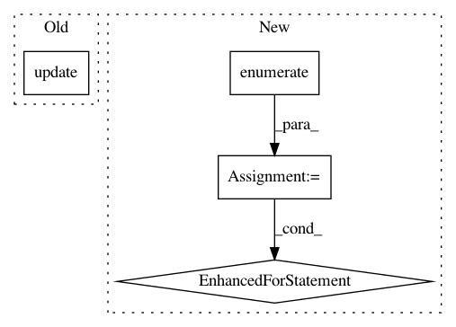

428516056abe41f135133e732a8d44af6ce9a234,rllib/policy/torch_policy.py,TorchPolicy,learn_on_batch,#TorchPolicy#Any#,221
Before Change
loss_out.backward()
info = {}
info.update(self.extra_grad_process())
if self.distributed_world_size:
grads = []
for p in self.model.parameters():
After Change
// Loop through all optimizers.
grad_info = {"allreduce_latency": 0.0}
for i, opt in enumerate(self._optimizers):
// Erase gradients in all vars of this optimizer.
opt.zero_grad()
// Recompute gradients of loss over all variables.
loss_out[i].backward(retain_graph=(i < len(self._optimizers) - 1))
grad_info.update(self.extra_grad_process(opt, loss_out[i]))
if self.distributed_world_size:
grads = []
for param_group in opt.param_groups:
for p in param_group["params"]:
if p.grad is not None:
grads.append(p.grad)
start = time.time()
if torch.cuda.is_available():
// Sadly, allreduce_coalesced does not work with CUDA yet.
for g in grads:
torch.distributed.all_reduce(
g, op=torch.distributed.ReduceOp.SUM)
else:
torch.distributed.all_reduce_coalesced(
grads, op=torch.distributed.ReduceOp.SUM)
for param_group in opt.param_groups:
for p in param_group["params"]:
if p.grad is not None:
p.grad /= self.distributed_world_size
grad_info["allreduce_latency"] += time.time() - start
// Step the optimizer.
opt.step()
grad_info["allreduce_latency"] /= len(self._optimizers)
grad_info.update(self.extra_grad_info(train_batch))
return {LEARNER_STATS_KEY: grad_info}
In pattern: SUPERPATTERN
Frequency: 3
Non-data size: 4
Instances
Project Name: ray-project/ray
Commit Name: 428516056abe41f135133e732a8d44af6ce9a234
Time: 2020-04-15
Author: sven@anyscale.io
File Name: rllib/policy/torch_policy.py
Class Name: TorchPolicy
Method Name: learn_on_batch
Project Name: keras-team/keras
Commit Name: c3e844e7063efc14f6a8364cc04df4526b57352e
Time: 2018-01-11
Author: ozabluda@gmail.com
File Name: tests/keras/utils/generic_utils_test.py
Class Name:
Method Name: test_progbar
Project Name: Featuretools/featuretools
Commit Name: a725cacb4bfc27554d5012f317f516d2b71dbc55
Time: 2019-10-29
Author: 4307001+thehomebrewnerd@users.noreply.github.com
File Name: featuretools/computational_backends/feature_set_calculator.py
Class Name: FeatureSetCalculator
Method Name: _calculate_groupby_features